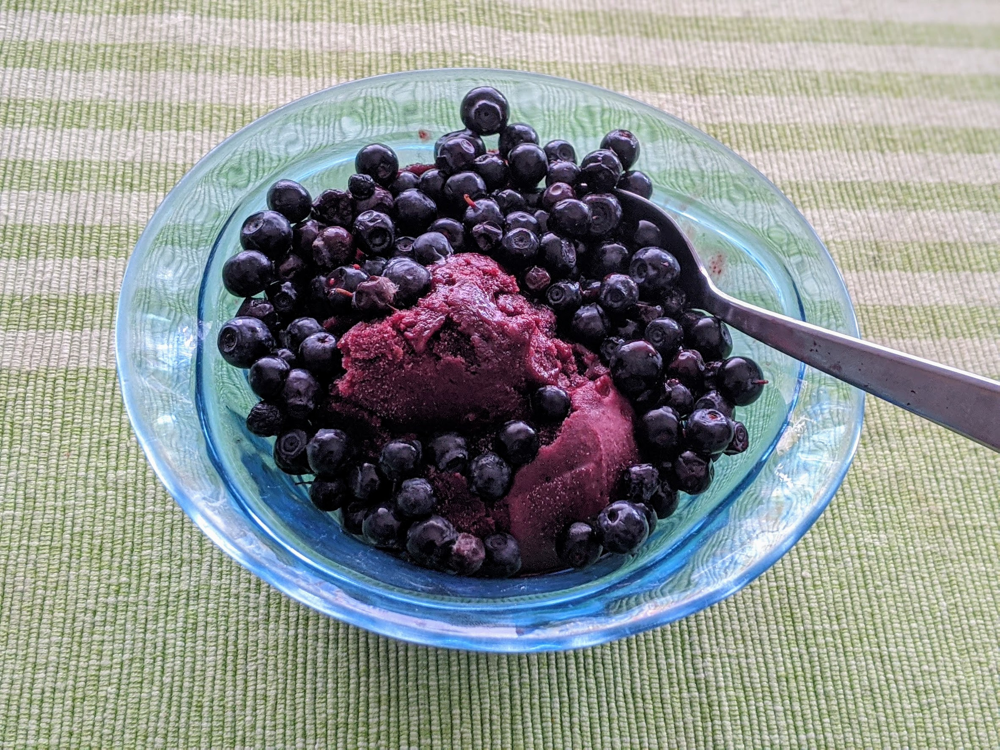

Sorbet açai-mûre

Ici avec des myrtilles sauvages
Pour un petit litre de glace :
- 100g de purée d'açai congelée
- 350-400g de mûres (environ)
- 80g de sucre
- 6cL de sirop d'agave (ou de miel, au pire)
- 3cL de jus de citron
- Mettre l'açai au frigo (dans un récipient creux, ça peut fuir) une nuit pour le laisser décongeler. Faire pareil avec les mûres si elles sont congelées.
- Mixer les ingrédients et les passer au chinois pour collecter le jus. Refaire ça plusieurs fois avec ce qui reste de solide pour être sûr que tout le jus a été collecté.
- Mettre au frigo jusqu'à ce que ça soit bien refroidi, puis passer à la sorbetière une demi-heure. Mettre le tout au congélateur, et le passer au frigo une demi-heure avant de servir pour qu'on puisse servir la glace sans problème.
Note : le sirop d'agave (ou nectar d'agave) ne se trouve pas au rayon sirop ou jus de fruits ; c'est un genre d'équivalent vegan du miel, en général placé pas loin dans les supermarchés. On en trouve facilement dans les magasins bio.